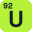
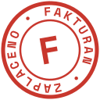
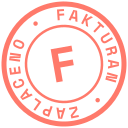

KapitálkaVelké patkové F jako iniciála, zbytek malý. Nejvíc „papír a účetní kniha“. Faktury – FakturanFaktury – Fakturan
StřechaHorní rameno F přeroste přes celé slovo, prostřední ukazuje na text. Faktury – FakturanFaktury – Fakturan
Fakt uranČistě typografické: tučné „fakt“, lehké „uran“. Vtip jen pro ty, kdo si ho všimnou. Faktury – FakturanFaktury – Fakturan
Prvek 92Uran jako dlaždice z periodické tabulky uprostřed názvu. Faktury – FakturanFaktury – Fakturan
Radioaktivní fakturaFaktura s ohnutým rohem a znakem radiace. Nejhlasitější vtip. Faktury – FakturanFaktury – Fakturan
Planeta UranF v kroužku, kolem něj prstenec. Kroužek a uran v jednom. Faktury – FakturanFaktury – Fakturan
RazítkoKulaté razítko „Fakturan • Zaplaceno“, trochu nakřivo.  Faktury – FakturanFaktury – Fakturan
QR FF poskládané z modulů QR platby. Na 16 px vychází přesně do pixelů. Faktury – FakturanFaktury – Fakturan
F na oběžné drázeVelké F, zbytek malý a kolem F prstenec Uranu. Spojuje dva tvoje nápady, prstenec vzešel z návrhu v Canvě. Faktury – FakturanFaktury – Fakturan